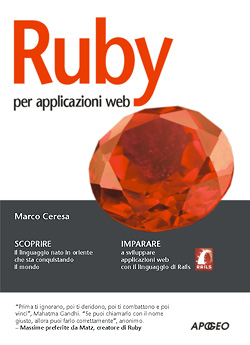

Ruby per applicazioni web è il primo libro in lingua italiana dedicato al linguaggio di programmazione Ruby. Frutto della collaborazione di alcune tra le migliori menti del panorama informatico italiano, il volume è edito da Apogeo.
Il Libro
Non solo manga, sushi e arti marziali. Dal Giappone arriva la nuova rivoluzione dell'informatica: Ruby, il linguaggio di programmazione orientato agli oggetti, già famoso per essere il linguaggio di Rails.
Questo libro ne esamina le principali caratteristiche, con particolare attenzione al suo utilizzo nello sviluppo di applicazioni web.
I primi capitoli sono destinati a principianti e neofiti: grazie alle potenzialità didattiche di Ruby, esso è rivolto anche al lettore completamente digiuno di programmazione. Particolarmente esauriente il capitolo dedicato ai database, che dedica particolare attenzione a MySQL e PostGreSQL.
Quindi si prendono in considerazione la scrittura di script CGI, le funzionalità embedded (simili a PHP, ma senza i relativi svantaggi), l'uso del web server integrato, senza dimenticare alcuni accenni ai problemi si sicurezza.
Segue la trattazione delle più importanti librerie scritte per Ruby: si spazia dalla gestione delle immagini
alla programmazione distribuita, dall'uso delle funzioni di networking all'automatizzazione dei processi con Rake.
Un cenno particolare è dedicato all'uso dei Test::Unit,
paradigma ormai diffuso della programmazione avanzata, proseguendo poi con temi d'attualità come la gestione di RSS e Atom,
la scrittura di documentazione, il parsing di XML.
Un libro per non farsi trovare impreparati alla rivoluzione che verrà…
- Ruby per applicazioni web
- 384 pagine
- Formato 17cm × 24cm
- ISBN: 88-503-2510-X
Ruby è…
Semplice. È possibile imparare ad usarlo in pochi giorni, e grazie alle numerose librerie incluse nella distribuzione ed a quelle installabili tramite RubyGems è possibile produrre programmi utili in pochissimo tempo.
Dinamico. In Ruby non c’è bisogno di dichiarare il tipo delle variabili, l’interprete è in grado di capirle da sè, ma allo stesso tempo Ruby è dotato di strong typing, il che significa che
2+"3"sarà un errore, diversamente da linguaggi come Php o Perl.Davvero OO. Questo che significa che in Ruby tutto è un oggetto. Se state pensando a Java siete fuori strada, in Ruby non esiste nessuna distinzione tra tipi base e oggetti, né tantomeno la OOP in Ruby è invasiva e irritante come in Java, proprio grazie alla sua maggior purezza.
Espressivo. Ruby ha molte strutture dati e tipi built-in (
Hash,Arraydinamici,Regexp, interi di dimensione arbitraria), ed ogni classe in Ruby ha un’interfaccia molto ricca, il che rende le operazioni comuni straordinariamente semplici (guardate ad esempio Ruby Haiku). Inoltre i blocchi—una funzionalità che non è comune nei linguaggi mainstream—permettono a Ruby di esprimere in modo conciso ed espressivo una miriade di problemi differenti.Libero. Ruby è rilasciato sotto doppia licenza, GPL e Ruby license, che è una sorta di BSD. Potete insomma farci quello che volete, o contribuire alla crescita della piattaforma.
Divertente. È difficile spiegarlo, ma l’insieme di tutte le caratteristiche di Ruby fanno si che sia soprattutto piacevole da usare.
Forza, installatelo o fate una prova.
Testi tratti dal sito Ruby-it.org